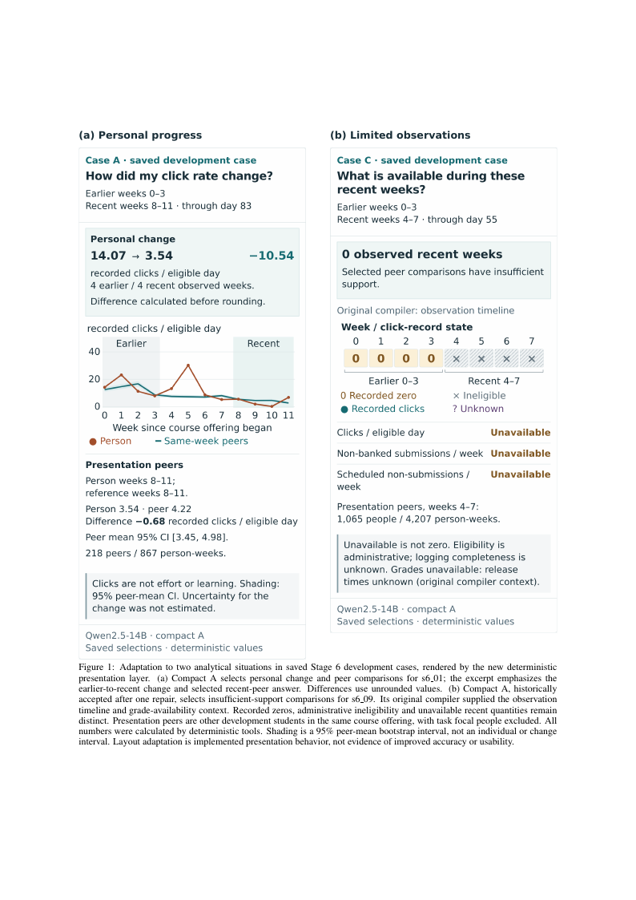
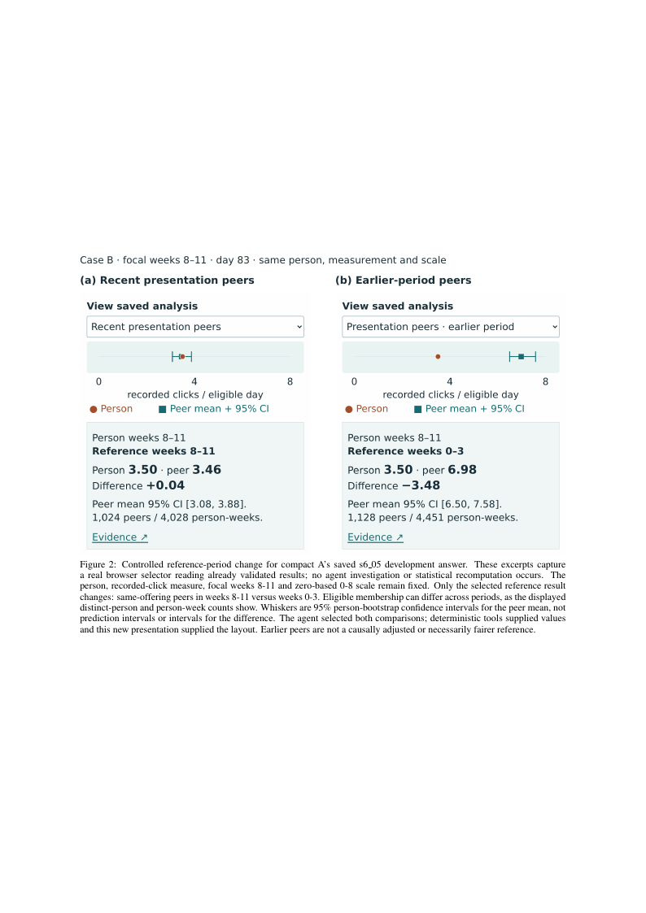
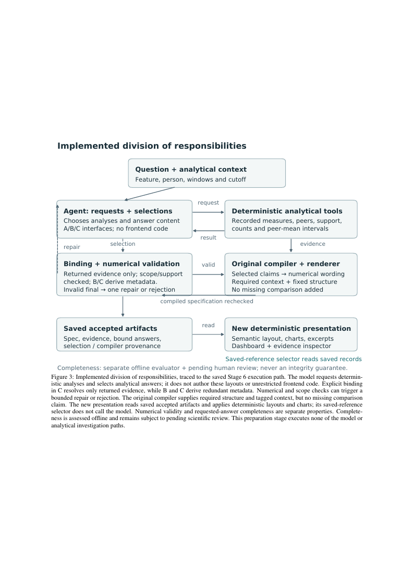
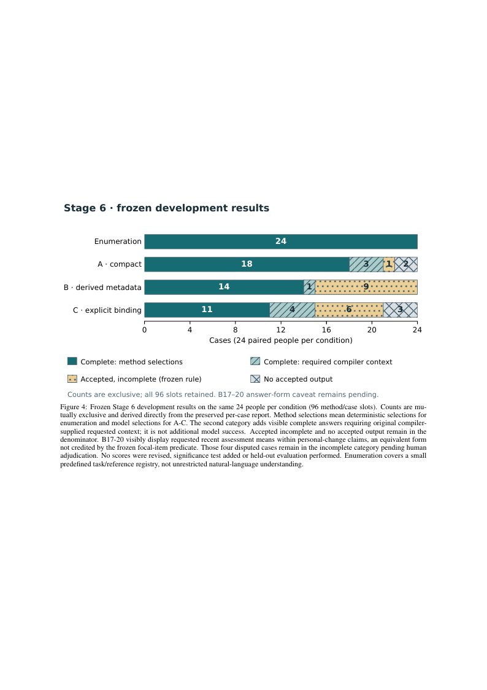
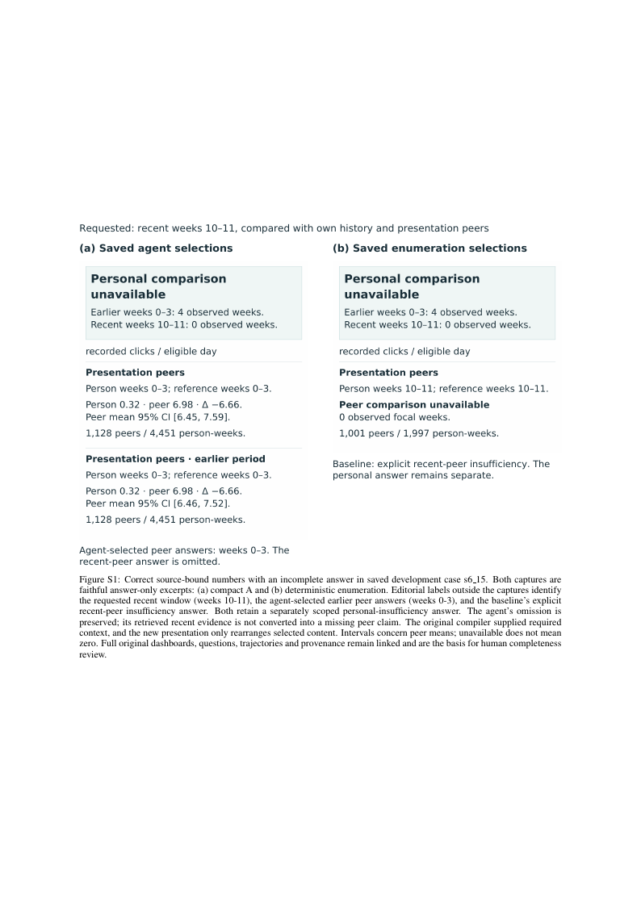
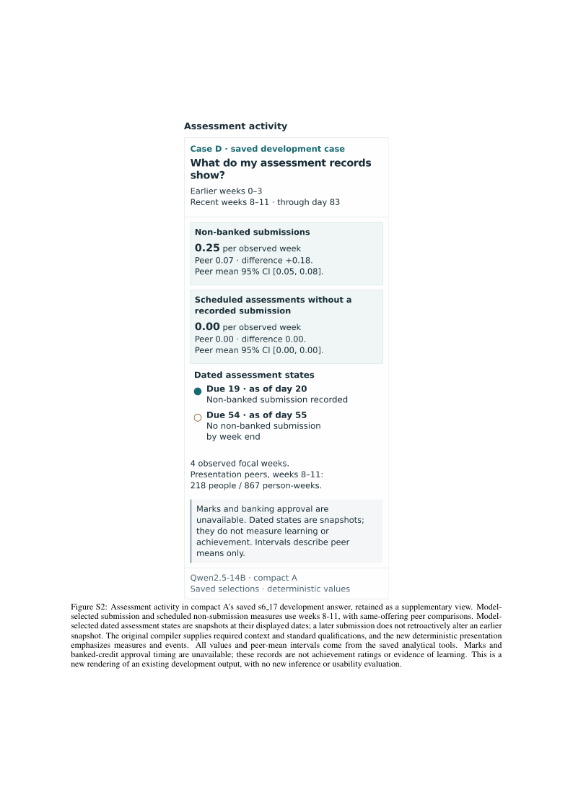

Gallery · A4 proof PDF · LaTeX source
Unmodified official SCITEPRESS template. Normal two-column figure floats and 9 pt captions; no geometry or caption shrinking. Not a manuscript draft. Print at 100%, without fit-to-page. CSS dimensions are not calibrated physical screen dimensions.





